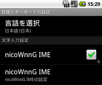
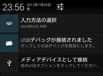
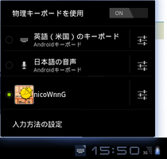
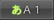

「nicoWnnG IME」をご利用いただきありがとうございます。
この画面は、インストール後の初回起動時、またはアプリ一覧から「nicoWnnG」を実行すると表示されます。本画面にて、nicoWnnG IMEの設定を行うことができます。
以下をクリックすると、ヘルプをご覧いただくことができます。
インストール後、以下の手順で設定を行うと、nicoWnnGで入力できるようになります。
|
↓
|
|

|
| Android 4.x |
文字入力が可能な状態で、画面上端の「通知バー」を下へスライドして、「入力方法の一覧」で「nicoWnnG IME」を選びます。

|
|||
|---|---|---|---|---|
| Android 3.x |
文字入力が可能な状態で、デスクトップ画面右下（時計の隣）のキーボードアイコンをタッチして、「nicoWnnG」を選びます。

|
|||
| Android 2.x/1.x |
入力エリア内を長押しして、表示されたダイアログから「入力方法」を選びます。
IMEの一覧が表示されますので、「nicoWnnG IME」を選択してください。
|
以下のボタンをクリックすると、nicoWnnGの大まかな設定変更を行うことができます。
詳細な設定変更は、「詳細設定」で行うことができます。
以下の入力エリアをタッチすると、nicoWnnG IMEの設定画面を開くことができます。
横画面にしてからタッチすると横画面モード、縦画面にしてからタッチすると縦画面モードの設定を行うことができます。
nicoWnnG IMEキーボード表示中は、[文字種]キーを長押しして、現れたダイアログで[設定]ボタンをクリックすると、設定画面を開くことができます。
nicoWnnG IMEは、ユーザー情報を入力できません。
nicoWnnG IMEは、ネットワークにアクセスしないため、情報を収集することができません。
これらが正しいことの保証は、公開されたソースコードにアクセスすることで確認できます。アクセス方法は、「ライセンス」をご覧ください。
nicoWnnG IMEは、オムロン ソフトウェア(株)/hiroshica/後藤 浩昭（GORRY）の著作物です。
nicoWnnG IMEは、「Apache License Version 2.0」で配布されます。このライセンスに基づいての使用・再配布が許可されます。
「Apache License Version 2.0」のライセンス条文は、以下からお読みいただけます。
nicoWnnG IMEに含まれている絵文字画像は、Six Apart Ltdの著作物です。この絵文字画像は、『クリエイティブ・コモンズ 表示 2.1 日本 ライセンス』に基づいて利用しています。
nicoWnnG IMEは、以下URLを配布先とします。利便性などのためにこれ以外のURLで配布することがありますが、以下が最も正式なものであり、完全な最新のパッケージを得ることができます。